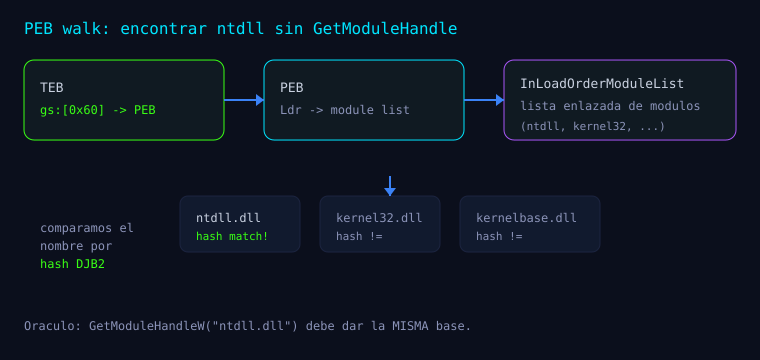
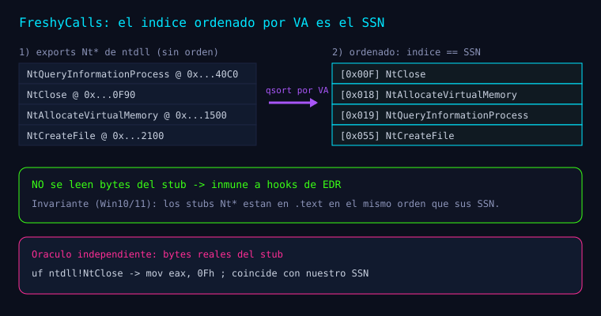
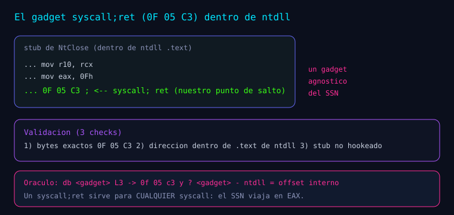

Serie: Kagemusha
Kagemusha — Fases 0 a 3: del toolchain al gadget
Kagemusha — Fases 0 a 3: del toolchain al gadget
Documentación de las fases M0–M3 tal como están registradas en el README.md y en el código del repositorio. Estas fases no ejecutan aún ninguna syscall: preparan los cimientos para la Fase 4.
Fase 0 — Toolchain + debugger + "hola ASM" · M0 ✅
Objetivo (README). "Validar el pipeline completo C + MASM y el flujo de depuración por línea de comandos."
Implementación (README).
tools/build.cmd— invocavcvars64,ml64(ASM) ycl/link(C), con PDB completo.src/asm/hello.asm—KageHelloAsmdevuelve 42.src/main.c— punto de entrada del selftest.
Entorno (verificado, del README).
- MSVC 19.51 (Build Tools 2026), MASM
ml6414.51, Windows SDK 10.0.26100. - Debugger
cdbv10.0.29617 (aliascdbX64),_NT_SYMBOL_PATHconfigurado.
Pruebas. T1 KageHelloAsm() == 42 → PASS.
Evidencia (docs/evidencias/m0.txt).
bp Kagemusha!KageHelloAsm
Kagemusha!KageHelloAsm:
00007ff6`1cf72a30 b82a000000 mov eax,2AhSalida: M0 KageHelloAsm() = 42 (exit 0).
Por qué importa el PDB (del workflow del repo). El plan exige bp simbólicos y símbolos resueltos (ntdll!NtClose) para poder verificar; sin PDB no hay símbolos y la verificación falla.
Fase 1 — Utilidades base (util/) · M1 ✅

Objetivo (README). "Acceso a ntdll sin depender de la IAT: PEB walk, resolución de exports por hash, rangos y logging."
src/util/peb.c (código real)
UtlGetCurrentPeb→__readgsqword(0x60).UtlFindModuleByHash— caminaInLoadOrderModuleList(PEB->Ldr) comparando
UtlHashStrWide(BaseDllName.Buffer).
UtlGetModuleRange— recorre las secciones PE y devuelve.text(con el chequeo dee_lfanew).UtlIsReadableRange— validación real conVirtualQuery(estadoMEM_COMMIT, sin
PAGE_NOACCESS/PAGE_GUARD).
PVOID UtlGetCurrentPeb(VOID) {
return (PVOID)__readgsqword(0x60); /* TEB -> PEB */
}src/util/exhash.c (código real)
Hash DJB2 con semilla 5381. Ojo al detalle: UtlHashStrAnsi no aplica tolower; es UtlHashStrWide la que normaliza a mayúsculas (a–z):
DWORD UtlHashStrAnsi(PCSTR String) {
DWORD Hash = 5381u;
for (const unsigned char *p = (const unsigned char *)String; *p; p++)
Hash = ((Hash << 5) + Hash) + (DWORD)*p; /* DJB2 */
return Hash;
}UtlGetExportByHash(PVOID DllBase, DWORD FuncNameHash) recorre el export directory y **descarta *forwarded*** (RVA dentro del rango del export directory → NULL); además valida e_lfanew, SizeOfImage y que las tablas caben en la imagen.
Por qué sin IAT (del plan §3.1). UtlGetExportByHash es la única vía de obtención de direcciones: "sin GetModuleHandle ni GetProcAddress, que son IAT-visibles". Los hashes, en el código actual, se calculan en runtime (UtlHashStrAnsi); el plan menciona una macro KAGE_HASH en tiempo de compilación como trabajo futuro.
La prueba (oráculo independiente)
rax=00007ffc48540f90 ; lo que resuelve nuestro codigo
00007ffc`48540f90 ntdll!NtClose (NtClose) ; lo que dice el simbolo de Microsoft
? (rax - ntdll!NtClose) = 0 ; IDENTICOSSalida: M1 ntdll base = 00007FFC483E0000, .text = ... (1482908 bytes), NtClose = 00007FFC48540F90.
Fase 2 — Resolución de SSN por FreshyCalls · M2 ✅

Objetivo (README). "Obtener el SSN de cada Nt* sin leer bytes del stub (inmune a hooks), por orden de export."
Implementación (README)
include/kage/resolver.h—KAGE_SSN_ENTRY, códigosKAGE_ERR_*,KageResolveSsnTable.src/resolver/freshycalls.c— filtraNt*(Nt + mayúscula), ordena por RVA,índice == SSN;
detecta VAs/RVAs duplicadas y forwarded.
El algoritmo (código real de freshycalls.c)
/* 1) KageEnumSyscallExports: colecciona exports "Nt*" (filtro Nt + mayuscula) -> {Rva, NameHash} */
/* 2) ordenar por RVA ascendente (equivale a ordenar por VA dentro del modulo) */
qsort(Exports, n, sizeof(KAGE_NT_EXPORT), KageCompareByRva);
/* 3) invariante: direcciones estrictamente crecientes (sin duplicados) -> KAGE_ERR_COLLISION */
/* 4) para cada entrada del catalogo, busca por hash y toma el indice ordenado: */
Entries[i].Ssn = (WORD)j; /* indice en el sort == SSN */Invariante (README). "En Windows 10/11 los stubs Nt* residen en .text en orden de SSN."
La prueba (oráculo independiente)
uf ntdll!NtClose
ntdll!NtClose:
00007ffc`48540f93 b80f000000 mov eax,0Fh ; SSN realSalida: M2 FreshyCalls: 8/8 coinciden con el stub. Del README (tabla de 12 en total):
| Función | SSN | Función | SSN |
|---|---|---|---|
| NtClose | 0x00F | NtAllocateVirtualMemory | 0x018 |
| NtCreateFile | 0x055 | NtProtectVirtualMemory | 0x050 |
| NtOpenProcess | 0x026 | NtReadFile | 0x006 |
| NtQuerySystemInformation | 0x036 | NtWriteFile | 0x008 |
| NtQueryInformationProcess | 0x019 | NtOpenKey | 0x012 |
| NtCreateThreadEx | 0x0C9 | NtWaitForSingleObject | 0x004 |
Fase 3 — Gadget syscall;ret · M3 ✅

Objetivo (README). "Localizar y validar la instrucción real syscall;ret (0F 05 C3) dentro de ntdll."
Implementación (README + gadget.c)
src/resolver/gadget.c—KageFindGadgetInStub(busca0F 05 C3en el stub),KageValidateGadget
(bytes + rango .text), pool determinista por VA (respaldo).
KageEnumSyscallExports(freshycalls.c) es la fuente única de enumeración, reutilizada por
SSN y por el pool.
Código real (funciones internas static):
#define KAGE_GADGET_SCAN 64 /* bytes a escanear dentro del stub */
static BOOL KageIsGadgetBytes(const BYTE *p) {
return (p[0] == 0x0F && p[1] == 0x05 && p[2] == 0xC3); /* syscall; ret */
}
static PVOID KageFindGadgetInStub(PVOID Stub); /* ancla a 4C 8B D1 B8 y escanea 64 bytes */
static BOOL KageValidateGadget(PVOID Gadget, PVOID TextStart, SIZE_T TextSize);Cómo se elige el gadget (de KageResolveGadgets)
- Se intenta el gadget del propio stub (
KageFindGadgetInStub), que **ancla al prólogo de
syscall real 4C 8B D1 B8** (endurecimiento M4) y escanea 64 bytes buscando 0F 05 C3.
- Si no valida (p. ej. stub sin gadget), se recorre el pool de stubs
Nt*limpios, ordenado
por VA ascendente (respaldo determinista y reproducible).
KageValidateGadgetexige: bytes0F 05 C3y que el gadget caiga dentro de.text.
Pruebas. T8 — 4/4 gadgets con bytes 0F 05 C3 dentro de .text → PASS.
Evidencia (docs/evidencias/m3.txt).
db poi(Kagemusha!g_Entries+0x18) L3
00007ffc`48540fa2 0f 05 c3 ; syscall; ret
? poi(Kagemusha!g_Entries+0x18) - ntdll = 0x160fa2 ; dentro de ntdllSalida: M3 gadgets validos (0F 05 C3 en .text): 8/8.
Módulos y contratos (de resolver.h y util/)
/* util/ */
PVOID UtlGetCurrentPeb(VOID);
PVOID UtlFindModuleByHash(DWORD NameHash);
BOOL UtlGetModuleRange(PVOID Base, PVOID *TextStart, SIZE_T *TextSize);
BOOL UtlIsReadableRange(const VOID *Address, SIZE_T Size);
DWORD UtlHashStrAnsi(PCSTR String);
DWORD UtlHashStrWide(PCWSTR String);
PVOID UtlGetExportByHash(PVOID DllBase, DWORD FuncNameHash);
VOID UtlLogSetLevel(UTL_LOGLEVEL);
VOID UtlLog(UTL_LOGLEVEL, PCSTR fmt, ...);
/* resolver.h (API publica) */
typedef struct _KAGE_SSN_ENTRY {
DWORD NameHash; /* DJB2 del nombre, p.ej. "NtClose" */
WORD Ssn; /* numero de servicio = indice en el sort-by-VA */
PVOID FunctionAddress; /* VA real de la funcion Nt* (export) */
PVOID StubAddress; /* VA del stub en ntdll (solo referencia) */
PVOID Gadget; /* VA del gadget syscall;ret elegido (Fase 3) */
} KAGE_SSN_ENTRY;
NTSTATUS KageEnumSyscallExports(PVOID ModuleBase, KAGE_EXPORT_CB Cb, PVOID Ctx);
NTSTATUS KageResolveSsnTable(PVOID NtdllBase, KAGE_SSN_ENTRY *Entries, DWORD Count);
NTSTATUS KageResolveGadgets(PVOID NtdllBase, KAGE_SSN_ENTRY *Entries, DWORD Count);
BOOL KageIsStubHooked(PVOID Stub);Nota: KageFindGadgetInStub y KageValidateGadget existen como funciones static internas de gadget.c (no forman parte de la API pública).
Plan de arquitectura (v1): alcance (del plan §1)
| Incluido en v1 | Fuera de alcance |
|---|---|
| SSN por FreshyCalls (sort-by-VA) | Direct syscalls como mecanismo de producción |
Gadget syscall;ret validado | Stack/call-stack spoofing |
| Trampolín MASM por función | Sleep obfuscation / cifrado |
| Wrappers C tipados | VEH + hardware breakpoints |
| PEB walk, DJB2, logging, rangos | Unhooking / ntdll limpio desde KnownDlls |
| Harness determinista + cdb | x86, WoW64, ARM64 |
Verificación de RIP dentro de ntdll | Inyección de procesos / payloads |
Cómo sigue la serie
Toda la serie (navegable): Kagemusha.
Bibliografía y referencias
- Fuentes primarias:
README.md,docs/plan-arquitectura-v1.md,src/util/peb.c,
src/util/exhash.c, src/util/log.c, src/resolver/freshycalls.c, src/resolver/gadget.c, include/kage/resolver.h, docs/evidencias/m0..m3.txt.
- Russinovich, Solomon, Ionescu — Windows Internals, 7.ª ed.
- crummie5 — FreshyCalls (
github.com/crummie5/FreshyCalls).
Aprender a romper para poder defender.